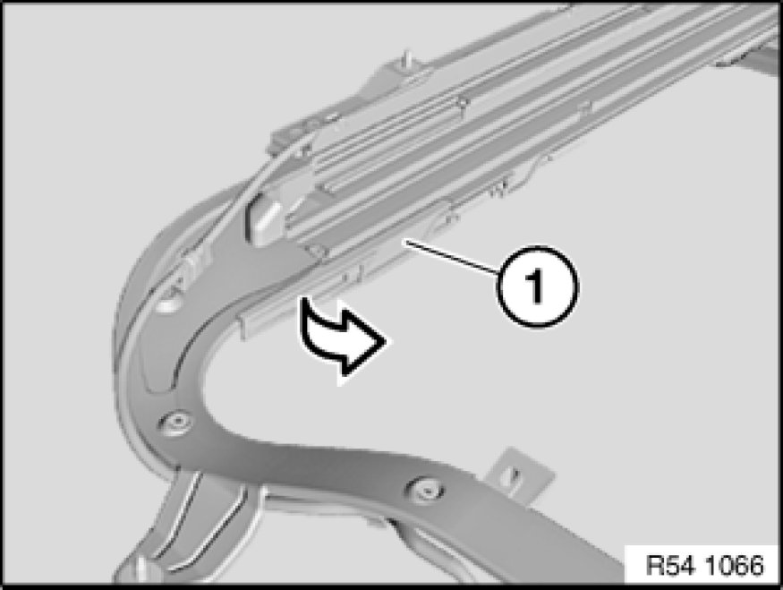
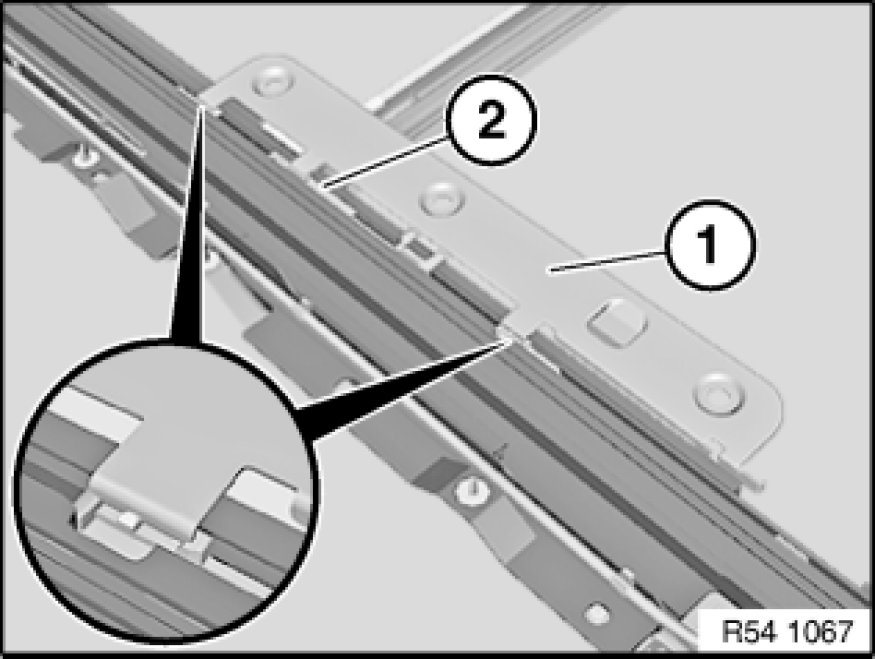
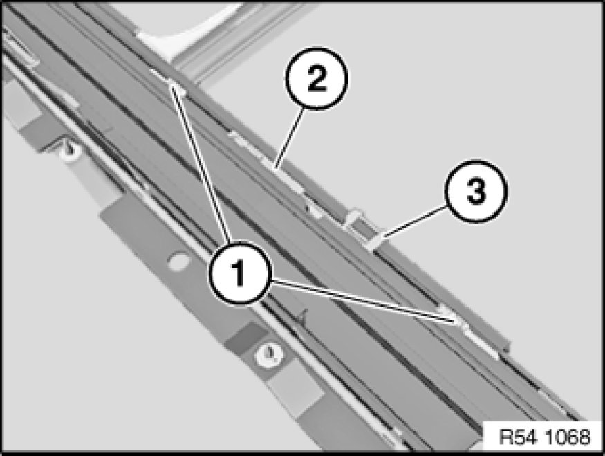
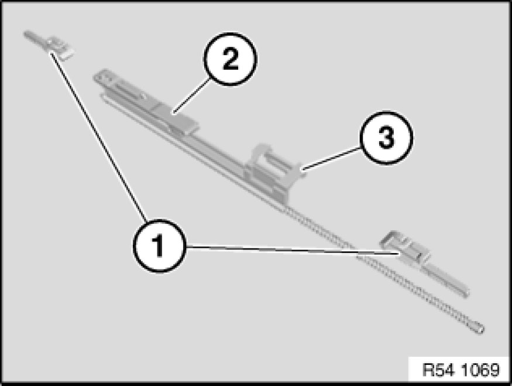
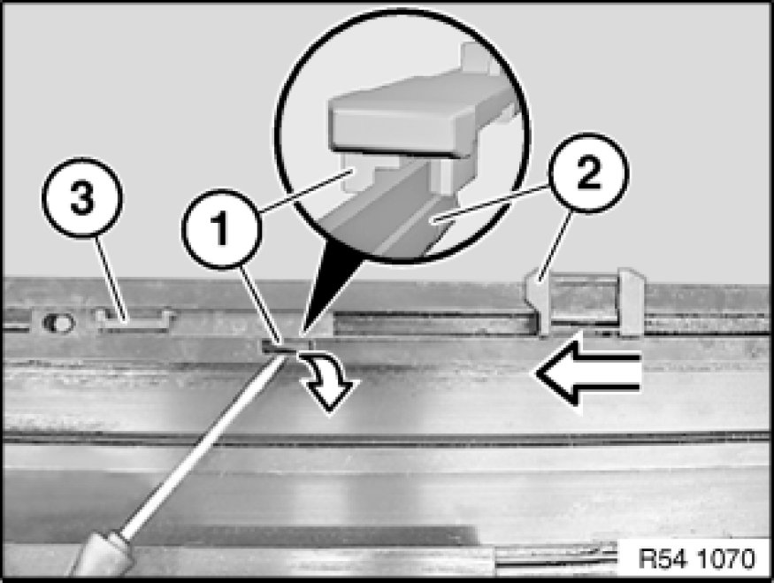

54 10 050 Removing and Installing/Replacing Mechanism For Floating Roofliner
54 10 050 - Removing and installing/replacing mechanism for floating roofliner

Necessary preliminary tasks:
- Remove glass slide/tilt sunroof 54 12 211 Removing and Installing Complete Glass Slide/Tilt Sunroof
- Remove slider set for floating roofliner Service and Repair
- Remove rear cross-member 54 13 150 Removing and Installing Rear Cross-Member

Important!
Risk of damage!
Carefully press down end stops (1) on left and right and unclip in inward direction from guide channel.

Important!
Risk of damage!
Unclip floating roofliner cover plate (1) from slider for front sun shield.
Remove floating roofliner cover plate (1) upwards from locking lever (2).
Installation:
In the event of damage, the faulty parts must be replaced.

Pull mechanism for floating roofliner towards rear out of guide channel:
1. Sliders for floating roofliner
2. Locking lever for floating roofliner
3. Rear drive cable plate with drive cable

Installation:
Ensure correct installation sequence:
1. Sliders for floating roofliner
2. Locking lever for floating roofliner
3. Rear drive cable plate with drive cable

Slide in locking lever for floating roofliner (3) and slide up to recess in guide frame.
Open locking lever (1) with screwdriver.
Slide rear drive cable plate (2) into locking lever.
Note:
Correct insertion can be checked by pulling back the drive cable plate (2):
Drive cable plate (2) and locking lever for floating roofliner (3) must execute a joint movement.
In addition, the correct spacing of locking lever (3) and drive cable plate (2) is determined by the floating roofliner cover plate.